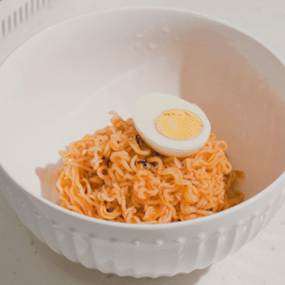
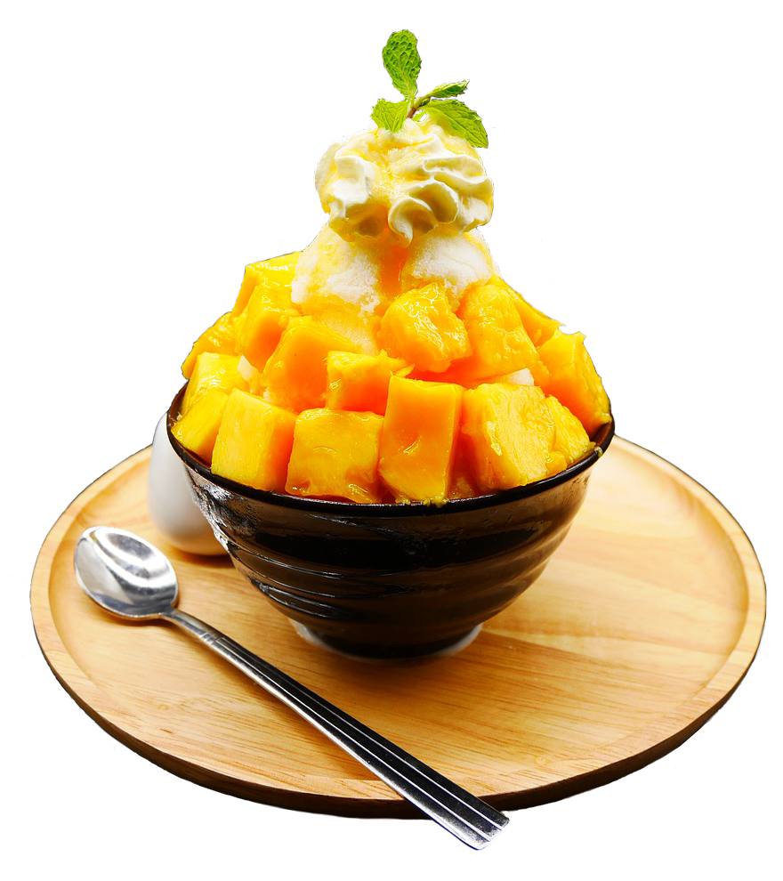

History

South Korean cuisine has evolved through the centuries. It reflects a complex interaction of the natural environment and different cultural trends.
It is largely based on rice, vegetables, seafood and meats. Ingredients and dishes vary by province.
Korean Food Today
The rice consumption has decreased from 1985 because people rush toward processed foods and instant foods. Fast food chains have already become part of modern food culture in Korea.
Despite this, Koreans keep a successful balance between both cultures (traditional and western).


Welcome to Korean Cuisine
Each dish contains a story & a taste to identify its purpose. There is a philosophy koreans believe in that "food & medicine come from the same root". With this, we introduce you a world of culinary cuisine of a 5,000 year history.
Side dishes
Banchan are a variety of side dishes that are meant to be shared together. Each dish serves a small purpose of accompanying the main dish.
Because each region of Korea produce different kinds of vegetables, they are 100 kinds of varieties so far.


Main Dishes
Korean cuisine is known for having some of the healthiest foods on the menu. The dishes are simple but have pungent flavors and odors.
Some more famous Korean foods and dishes are Bulgogi (Korean beef barbecue), Samgyeopsal (grilled pork belly), Bibimbap (bowl of rice, vegetables and meat) or Kimchi Jjigae (Kimchi Stew).
Desserts
Typical Korean sweets are not as abundant as in Europe. They are quite expensive compared to other types of products.
However, most of them are really popular, like Hotteok or Bingsu.
